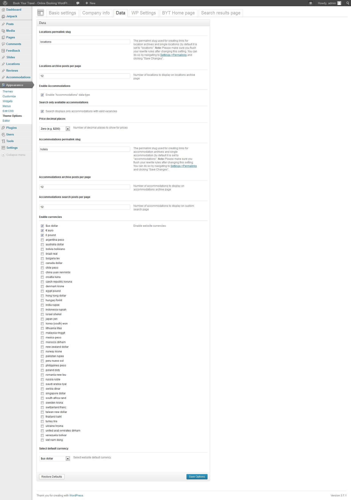

Book Your Travel - Online Booking WordPress Theme
Book Your Travel is a responsive WordPress theme ideal for booking portals, travel agencies, hotels, bed and breakfasts, guest houses, villas, etc. or travel blogs, but it would suit any business with slight customization.
Thank you for purchasing my theme. If you have any questions that are beyond the scope of this help file, please feel free to email via my user page contact form here. Thanks so much once again!
Getting started
Before you get started, please be sure to always check out these documentation files. To install this theme you must have a working version of WordPress already installed and configured on your machine or server. For a detailed guide on installing WordPress, please visit the WordPress Codex installation documentation http://codex.wordpress.org/Installing_WordPress.
Installation
Upload via ftp:
Step 1: Firstly, unzip the BookYourTravel_WP_Theme.zip file to a directory on your computer.
Step 2: Locate an archive named BookYourTravel.zip which is your installable WordPress theme file.
Step 3: Unzip this archive and upload the BookYourTravel folder to your server via ftp to the /wp-content/themes/ directory inside your Wordpress installation.
Step 4: Activate the newly installed theme. Go to Appearance > Themes and activate it.
Important note: If using FileZilla as your FTP client, please make sure Binary transfer mode is used. To do this go to Transfer > Transfer mode and make sure Binary is selected.
Upload via Wordpress admin:
Step 1: Log into your Wordpress admin
Step 2: Go to Appearance > Themes panel
Step 3: click the Install Themes tab
Step 4: Click the upload subtab
Step 5: Upload the BookYourTravel.zip file (and not the BookYourTravel_WP_Theme.zip file!)
Activation
Once you have uploaded the theme, activate it in Appearance > Themes.
For further information about using WordPress themes, read the codex theme-usage documentation at http://codex.wordpress.org/Using_Themes.
Sample data
How do I use the Sample Data?
In your downloaded file, locate the folder called SampleData.
Within this folder you will find your sample data file(s).
Step 1: To upload and import the sample data, log into your WordPress administration
Step 2: Browse to Tools > Import
Step 3: Enable the WordPress import tool and follow the instructions for importing data from an xml file.
After the import is complete you should have all the posts, pages and custom-posts from the demo.
There are certain things a WordPress import can not do, so after uploading the sample data make sure you do the following:
- Go to Appearance > Theme Options to setup your theme options.
- Go to Appearance > Menu to set your menu locations.
- Go to Appearance > Widgets to add your widgets (widgets aren’t included in a WordPress import file)
- Go to Settings > Permalinks and configure your permalinks structure (Select Post name).
- Go to Accommodations > Vacancies and create new vacancies.
Setting up pages
Overview
The Book Your Travel Online Booking WordPress theme comes with the following custom page templates. For a complete experience of the theme, we advise you to create each page:
- BYT Home page
- Custom Search Results
- Accommodation list
- Accommodation archive by accommodation type
- Hotel list
- Self-catered (vacancy rental) list
- Car rental list
- Tour list
- Locations Archive (it not provided as a static page template, please go to Locations section to read more)
- Contact Us
- Blog
- Login
- Register
- My Account
- Reset password
- Page with both sidebars
- Page with no sidebars
- Page with left sidebar
- Page with right sidebar
- Search results
How to create a new page?
Step 1: Navigate to Pages and click Add New.
Step 2: Input a new name for your page, then find the Page Attributes box on right side.
Step 3: Set your Parent page; it’s usually set to No Parent
Step 4: Set your template from the dropdown list.
Step 5: Click Publish
In addition, the Book Your Travel Online Booking WordPress theme provides the following single post templates:
- Single Location
- Single Accommodation
- Single Blog post
BYT Home page
By default, wordpress shows the blog index page (index.php) with a list of blog posts in your blog as your home page.
To use the BYT custom home page please create a new page using the BYT Home custom page template. To do this go to Pages > New Page in your WP admin dashboard, enter a title, select byt home from the templates dropdown and click Publish.
Once done, go to Settings > Reading while still in the admin dashboard and under front page displays select A static page and select your newly created home page from the dropdown.
To show latest offers posts on the home page please go to Appearance > Theme Options and select the BYT Home page tab. Once there, make sure the Show latest offers check box is checked. Also ensure that your posts category is selected from the dropdown and that a number of posts you want to show on the front page is specified in the Latest offers count field.
If you opt for using the BYT Home template that comes with the BYT WordPress theme, you can additionally configure it by going to the Appearance > Theme Options section and accessing the BYT Home page tab - details of which are provided in the next section of this document.
Custom Search Results
Please create this page by going to Pages > Add New in your WordPress admin dashboard. Enter a title of your choice and select Custom Search Results from the Template dropdown. Once you do this, please go to Appearance > Theme Options, click on the Search results page tab and select this newly created page from the custom search results dropdown. This will ensure the front page search button takes you to your newly created custom search results page when clicked.
In addition, please specify whether you want search results in grid view form or in list view form by default. Additionally, please specify what what price the price filter should start at, what increment it should increase by and how many different price filter options the filter shows.
You can also specify whether hotels, self-catered (vacation rental) properties, car rentals and/or tours are searchable here.
Click on Save Options.
Contact Us
Please create this page by going to Pages > Add New in your WordPress admin dashboard. Enter a title of your choice and select Contact Us from the Template dropdown. Once you do this, add this newly created Contact Us page to your menus... This is further explained in the Menus section of this document.
You can further configure the Contact Us page by going to Appearance > Theme Options and accessing the Company Info tab where a number of contact page options are configurable.
Blog
If you wish for your site to have a Blog sub page, you can create a Blog index subpage by going to Pages > Add New in your WordPress admin dashboard. Enter a title of your choice and select Blog from the Template dropdown. Once you do this, the only other thing you need to do is add this newly created Blog page to your menus... This is further explained in the Menus section of this document.
Login
The Login template allows you to create a custom login page for your website. Go to Pages > Add New in your WordPress admin dashboard. Enter a title of your choice and select Login from the Template dropdown. Once you do this, add this newly created Login page to your menus... This is further explained in the Menus section of this document.
You can further configure the behaviour of your website with regards the Login page by going to Appearance > Theme Options and accessing the WP Settings tab. You can completely override the WordPress default wp-login.php page. You also have to select your newly created Login page under the Login page url option for this to work properly. Make sure you click Save Options button before leaving this section.
Register, My Account and Reset password
Similar to the above Login page, you should create the Register, My Account and Reset Password pages. For the pages to be fully functional, you must select them under the WP Settings tab of Appearance > Theme Options and hit the Save Options button.
Page with both sidebars
The Page with both sidebars allows you to create a website page with both right and left sidebar displayed. Go to Pages > Add New in your WordPress admin dashboard. Enter a title of your choice and select Page with both sidebars from the Template dropdown. Once you do this, add this newly created Page with both sidebars page to your menus... This is further explained in the Menus section of this document.
Page with left sidebar
The Page with left sidebar allows you to create a website page with left sidebar displayed. Go to Pages > Add New in your WordPress admin dashboard. Enter a title of your choice and select Page with left sidebar from the Template dropdown. Once you do this, add this newly created Page with left sidebar page to your menus... This is further explained in the Menus section of this document.
Page with right sidebar
The Page with left sidebar allows you to create a website page with right sidebar displayed. Go to Pages > Add New in your WordPress admin dashboard. Enter a title of your choice and select Page with right sidebar from the Template dropdown. Once you do this, add this newly created Page with right sidebar page to your menus... This is further explained in the Menus section of this document.
Page with no sidebars
The Page with both sidebars allows you to create a website page with not sidebars displayed. Go to Pages > Add New in your WordPress admin dashboard. Enter a title of your choice and select Page with no sidebars from the Template dropdown. Once you do this, add this newly created Page with no sidebars page to your menus... This is further explained in the Menus section of this document.
Search page
You do not need to do anything with regards the general search page template. It is used by WordPress to display search results when the sidebar search form is used.
Single accommodation and location
The single accommodation and location templates are utilized implicitly by WordPress when you create accommodation and location data in the WordPress administration dashboard. You create a new accommodation by going to Accommodations > Add New Accommodation. You can choose between a self-catered (vacation rental) or hotel accommodation. You create a new location by going to Locations > Add New Location. The accommodations and location datatypes are further explained in the section labeled Accommodations and locations.
Single blog post
The single blog post template is utilized by WordPress implicitly when you create a new blog post. You create a new blog post by going to Posts > New post.
Hotels and self-catered list
The hotel and self-catered lists allow you to create lists of hotels and self-catered (vacancy rental) accommodations separately. Once you create Pages by going to Pages > Add New and selecting an appropriate template, you can add them to the primary menu as explained earlier.
The Accommodation archive by accommodation type page allows you to create accommodation type-specific pages. For example, you can create a page at /accommodations/self-catered/lodges that lists only self-catered lodges if Lodge is an accommodation type taxonomy you have created. Additionally, you can use the Accommodation list template to create a list of all accommodations (hotel and self-catered)
Location list
The location list template is not available via a template from the dropdown. Instead, it is provided implicitly... via the archive-location.php template. You must add custom links inside your menu for locations manually to have them appear in menus.
Step 1: Go to Appearance > Menus
Step 2: Click on Links
Step 3: Add URL, http://www.yourdomain.com/locations)
Step 4: Add Title, Locations
Step 5: Save Menu
Car rental list
The car rental list allows you to create lists of cars for rent. Once you create the Page by going to Pages > Add New and selecting the Car rental list template, you can add this new page to the primary menu as explained earlier.
Tour list
The tour list allows you to create lists of tours. Once you create the Page by going to Pages > Add New and selecting the Tour list template, you can add this new page to the primary menu as explained earlier.
Theme options
To make full use of the rich set of features provided by the BookYourTravel WordPress theme, you must configure the theme options.
To begin configuring theme options, go to Appearance > Theme Options.
Basic settings
The basic settings tab allows you to upload your custom logo and to select the theme color scheme. Book Your Travel WordPress theme currently ships with 9 color schemes: Default, Black, Blue, Orange, Pink, Purple, Strawberry, Yellow and Navy.
Changing the logo
Step 1: Click Remove button to remove existing (default) logo.
Step 2: Click Upload and select your own logo.
Step 3: Click Save Options and wait for options to save.
Step 4: Go to front-end and hit F5 to refresh the page.
Company info
The company info tab allows you to customize company information displayed on the website. You can customize information that appears in the site footer and header as well as on the contact us page here.
Data
The data tab allows you to enable or disable custom post type data. At the moment you can enable or disable the accommodation custom post type, car rental and tours custom post type. The accommodation custom post type comes enabled by default.
You can also enable currencies and set default currency in this tab.
Additionally, you can configure the slugs for locations, accommodations, tours and car rentals on this tab too.
You can also set posts per page values for different parts of the site like hotel/self-catered lists, location archive, car rental archive and search results page.
Finally, you can indicate whether search results display all accommodations or only ones with vacancies here.
The Data tab also allows you specify whether prices used on the website will have 0, 1 or 2 decimal places. Use Price decimal places dropdown for this purpose.

WP Settings
The WP Settings tab allows you to customize a number of general WordPress features:
- Override wp-login.php and use custom login, register, forgot password pages instead
- Hide the WP admin bar from guest visitors
- Hide WP version number from html source
- Decide whether users can specify their own password upon registration
- Determine whether users must click a confirmation link before their account is activated upon registration.
In addition, this tab allows you to specify custom pages for a number of features of Book Your Travel theme. You can therefore configure the following pages to be used across the theme:
- My Account Dashboard page
- Page to redirect to after login
- Page to redirect to after logout
- Login page url
- Register page url
- Contact Us page url
- Reset password page url
- Terms and conditions page url
BYT Home page
The byt home page tab allows you to indicate whether you want to use the slideshow on the home page here or not.
You can also specify separately which lists of data you want to show on the home page - latest accommodations, latest blog posts, latest tours, latest locations here.
When configuring the slider, you are able to specify the speed of the slider here too. The speed is set to 1000 milliseconds (1 second) by default.
Search results page
As mentioned earlier, on this tab you can configure the page to redirect to when the search form is used on the byt home page.
In addition, you can specify whether you want search results in grid form or in list form by default, at what what price the price filter should start at, what increment it should increase by and how many different price filter options the filter shows.
Locations
Locations make up the core of the functionality of the Book Your Travel Online Booking WordPress theme. It is therefore fundamental that you use this data correctly in order to make full use of the rich functionality of this theme.
Locations
The first thing you should do is create new locations. To create a new location go to Locations > New Location in your WordPress admin dashboard. Once there enter your location data ie: title, description, country, visa requirements, languages spoken etc. Make sure you select a featured image using the featured image selection tool in the right hand side of this admin screen. Once added, you can hit View to view your newly created location.
If you are unable to view your newly created location and you are getting a 404 error page, you most likely did not customize your WP permalinks. To solve this problem, go to Settings > Permalinks and select one of the Common Settings then hit Save Changes. You may need to update your .htaccess file manually at this point depending on your file permissions configuration.
Accommodations
Accommodations also make up the core of the functionality of the Book Your Travel Online Booking WordPress theme. It is therefore fundamental that you use this data correctly in order to make full use of the rich functionality of this theme.
Facilities
Accommodations are dependent on facilities. Facilities are a custom taxonomy. Before entering Accommodations make sure you at least have one facilty created. To add a new facility go to Accommodations > Facilities. Once there fill in the form and hit the Add New Facility button.
Facilities are used by both accommodations and room types. A accommodation may for example have toilet facilities, gym & spa facilities, wifi facilities etc. Room types on the other hand may have mini bar facilities, ironing board, spa bath etc.
Room types
An accommodation requires room types to be specified so before you enter any accommodations make sure you define general room types too. To do this go to Accommodations > Room types.
Once there click on the New Room Type button. Room types can have mini bar facilities, ironing board, spa bath etc.
Accommodations
Now you are ready to create accommodation data. To create a new accommodation go to Accommodations > New Accommodation.
Hotel vs Self-catered (vacancy rental)
Here you must decide whether an accommodation is self catered or not via a check box "Is Self Catered". This option determines whether room types can be use for this accommodation and whether vacancies created are specific to a room type and accommodation or just to an accommodation. Also, this option renders differently on the front end. Self catered vacancies show only a booking calendar where one day of a calendar corresponds to one vacancy while non-self catered accommodations (hotels) can have multiple vacancies for one room type and one accommodation.
Enter a title, description and select a featured image. Specify other key information like star count, room types, facilities, and accommodation location. You may enter unlimited images to be used for the accommodation gallery that is displayed with the aid of the slider on a single accommodation view. Other fields which you can specify are address, website address, check in and out time, cancellation & prepayment info, children and extra bed restrictions, pet information, accepted credit cards, activities, parking and internet information. The latitude and longitude fields are used to populate the google map shown under the location tab on single accommodation view.
If you wish to allow visitors to your websites to contact accommodations directly via Send Inquiry button, you can allow for it by specifying a accommodation contact email address in the administration page of individual accommodations. If this field is populated, a Send Inquiry button will appear under the Review button in the right hand sidebar of a single accommodation screen. This email will also be used to send booking submissions to when accommodation booking forms are filled in.
Vacancies
Once you have a accommodation and a room type created (room type only for hotels), you can enter vacancies for this accommodation.
Vacancies require an accommodation at least to be specified. If you are adding a accommodation a room type must be specified too (for hotels, not for self-catered), combined with a to and from date. When creating vacancies you will also need to specify the number of rooms available (only for hotels, not for self-catered) and the price per night.
To create vacancies go to Accommodations > Vacancies. Once there, hit the New Vacancies button.

Note: A accommodation will not show a room price on the website unless a valid vacancies exist for a date period. On the front page, if no date filter is used, the current date + 1 date is used for date range against which accommodation vacancies are searched.
Bookings
Once you enter vacancies, visitors to your website will be able to make bookings against those vacancies. To view already created bookings go to Accommodations > Bookings. If you want to create a booking through the admin interface, go to Accommodations > Bookings and click the New Booking button. To test the booking system on the website, go to a single accommodation view and click the Book button. Fill in the form and click the Submit reservation button.
Note: vacancies are configured to automatically have their room count reduced as bookings are made against them. If however are booking is deleted, the room count of the vacancy is brought back to the original value.
Car rentals
Car types
Car rentals are dependent on car types. Car types are a custom taxonomy. Before entering car rentals make sure you at least have one car type created. To add a new car type go to Car rentals > Car types. Once there fill in the form and hit the Add New Car type button.
Car rentals
Once you have created at least one location and car type, you are ready to create car rental data. To create a new car rental entry go to Car rentals > New Car Rental.
Enter a title, description and select a featured image. Specify other key information like number of doors, number of available cars, pickup and drop of location, price per day, co2 emission, tranmission type and car type.

Car rental vacancies
The BYT theme treats car rental vacancies by making all car rentals available until booked. Once all cars (based on number of cars entered for a car rental entry) are booked a for a certain day, that car rental entry is no longer available for that day.
Tours
Tour types
Tours are dependent on tour types. Tour types are a custom taxonomy. Before entering tours make sure you at least have one tour type created. To add a new tour type go to Tours > Tour types. Once there fill in the form and hit the Add New Tour type button.
Locations
Tours are also dependent on locations. To create a new location go to Locations > New Location in your WordPress admin dashboard. Once there enter your location data ie: title, description, country, visa requirements, languages spoken etc. Make sure you select a featured image using the featured image selection tool in the right hand side of this admin screen. Once added, you can hit View to view your newly created location.
Tours
Once you have created at least one location and tour type, you are ready to create tour data. To create a new tour go to Tours > New Tour.
Enter a title, description and select a featured image. Specify other key information like availaibility extra info, gallery images, map iframe script, location, and tour type.
Tour schedule
You can make any number of schedule entries for each tour. A schedule entry takes max number of people, price per person, start date and duration of tour. Once max number of people have booked a schedule entry, that specific entry becomes unavailable.
BYT Home page slider
The BYT Home page slider is very simple to use.
Firstly, the home page slider is configured to be used with the BYT Home custom page template. To understand how this work please read the BYT Home subsection of the Setting Up Pages section of this document.
Please make sure that the option to show slideshow on home page is checked in Appearance > Theme Options under the BYT Home page tab.
Once you make sure you are using the BYT Home custom template for your home page, and once the show slider on home page option in Theme Options is enabled, you can create slides to be used in the slideshow.
To create new slides go to Slides > Add New Slide in the WordPress admin dashboard.
Enter the title and excerpt text that are to be displayed as the slide content. Select a featured image to be used the slide image. Hit save when you are done.
You can create as many slides as you like.
What about slider speed?
You can modify slider speed in the Appearance>Theme Options under the BYT Home Page tab.
Localization
This theme is ready for localization via .po/.mo files, and works with the WPML plugin.
If you are not familiar with translating Wordpress themes, we recommend you read this codex page: http://codex.wordpress.org/Translating_WordPress
Step 1: Edit the .po file
Step 2: Save file with your language name it, for example: de_DE.po.
Step 3: Edit wp-config.php located in the root folder of wordpress and define the WPLANG prefix with your language name which should be similar to the translation file name.
Step 4: Then go to your server via FTP, navigate to the theme folder and find the languages folder, its located at wp-content > themes > BookYourTravel > languages
Step 5: Upload the language files in the languages folder.
Currencies
The BYT theme currency conversion is currently done by using the service provided by http://www.webservicex.net/CurrencyConvertor.asmx/ConversionRate.
The webservicex.net service currently supports the currencies listed here: http://www.webservicex.net/CurrencyConvertor.asmx
Changing symbols and codes
We have provided an admin interfect to allow users of the BYT theme to change/add currency information. You can access and use this screen by browsing to Currencies in the main admin sidebar.
Upgrade
The following steps outline how you should upgrade the BYT theme:
1. Put your WordPress website into maintenance mode. You can do so either
a) via plugin: http://wordpress.org/plugins/wp-maintenance-mode/
or
b) by uploading an empty file called .maintenance to the root folder (where WordPress is installed) like described here:http://smileyhappycoder.co.uk/wordpress/how-to-put-wordpress-into-maintenance-mode-manually/
2. Delete all files and directories inside BookYourTravel theme folder (usually this is wp-content/themes/BookYourTravel)
3. Unzip new zip file and upload all files and directories from zip to server into above mentioned BYT theme directory.
4. Put site out of maintenance mode (either delete .maintenance file or switch off maintenance via plugin if plugin was used).
5. Browse to admin, create new Hotels and Vacancy Rental pages using appropriate templates as mentioned earlier in this document.
6. Create self-catered accommodations, and create the vacancies for them.
7. Check theme settings - switch off/on new features etc.
8. Check that all is ok.
Customization
We recommend you create a child theme to customize html, css, js and php of the Book Your Travel WP Theme. This will allow you to overwrite the parent (original) theme with upgrades whenever upgrades are released and NOT lose any custom code you have written.
How to Create a Child Theme
Step 1: Create a directory in your themes directory to hold the child theme. The theme directory is wp-content/themes. Call the child theme directory something like BookYourTravel-child to differentiate it from the original.
Step 2: In the child theme directory, create a file called style.css. This is the only file required to make a child theme. The style sheet must start with the following lines:
/* Theme Name: BookYourTravel Child Theme URI: http://www.mydomain.com Description: Book Your Travel Child Theme Author: John Doe Author URI: http://example.com Template: BookYourTravel Version: 1.0.0 */ /* =Theme customization starts here -------------------------------------------------------------- */
You can change each of the above lines to suit your theme. The only required lines are the Theme Name, and the Template. Template is the directory name of the parent theme.
Note: The child theme’s stylesheet is included after the parent theme's and styles will therefore override those in the parent theme’s stylesheet.
Activate the child theme
Log in to your site’s dashboard, and go to Appearance > Themes. You will see your child theme listed there. Click Activate.You can now override the BookYourTravel styles without worry of them being overridden when you upgrade. You can also override specific php template files. To learn more about child themes please visit the WordPress child theme codex.